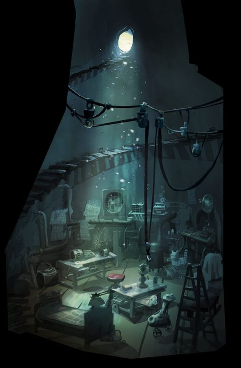

I'm sure you noticed I went into more detail regarding Ninjago. That's on purpose! Because up next, I've compiled some of my favorites from each sub-category.
The Music of Ninjago
Frankly, the soundtrack for a kid's show shouldn't be this good. One of the reasons it stands out to me comes from my love of ballet, and the world of musical storytelling. I love being able to hear what is happening on screen in the music.
In this piece, "Lloyd vs. Garmadon Reborn", the protagonist, Lloyd, leaves his team behind to go confront is newly-resurrected father, Garmadon, believing that he can turn him back to the good side. The music blends the characters' musical themes into an emotional, deperate, and heartwrenching battle between father and son.
In this piece, "Lloyd vs. Harumi”, Unagami pits Lloyd against an avatar of the late princess and villain Harumi. Lloyd is caught off guard, thinking she might be real, and we start the fight with a dramatic rendition of Harumi's theme. But Unagami’s deception doesn’t last long. In the moment Lloyd’s perception of the situation changes, so does the music, and the fight reignites, this time to a furious rendition of Unagami’s theme. It builds and builds until finally, the combatants land fatal blows at the same time, ending the fight.
In this piece, “Nya Becomes Water”, Nya attempts the irreversible process of merging herself with the sea in order to save her fiance from dying and prevent the rest of her team from being defeated by the storm spirit Wojira. We hear her indecision turn into determination and grow into power. The music builds into a rendition of her theme filled with love, sacrifice, glory, and impending pyrrhic victory.
The Concept Art
Ninjago is an animated Lego show. But it's not like the Lego movies, where everything is made of Lego parts. Most of the show's environments, props, and setpieces are rendered like "normal" 3D animation.
This means we get some incredible concept art that the show's environments are based off of. Here are some of my personal favorites:

Rarity of Bad Seasons
I quite like the vast majority of Ninjago's many seasons. In fact, have a fun pie chart about it! The width of each slice is reflective of the runtime of the season it represents. Each is labeled with the name of the season and what I would score it out of 10.